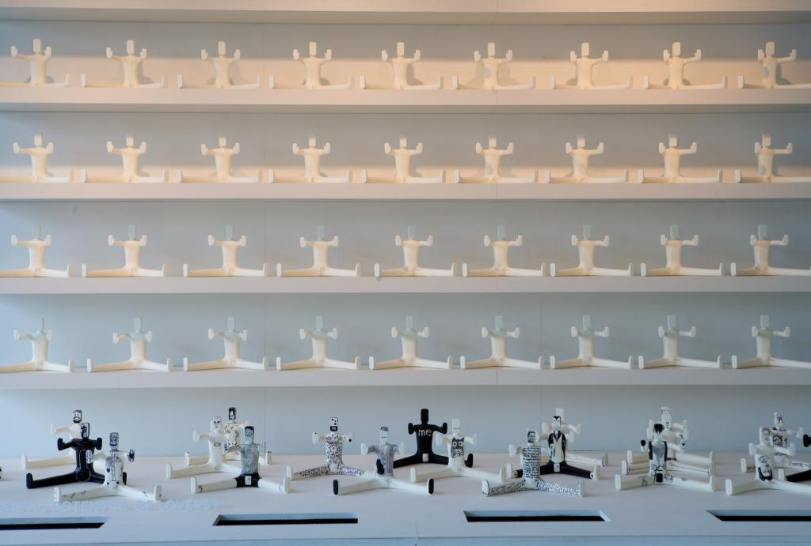
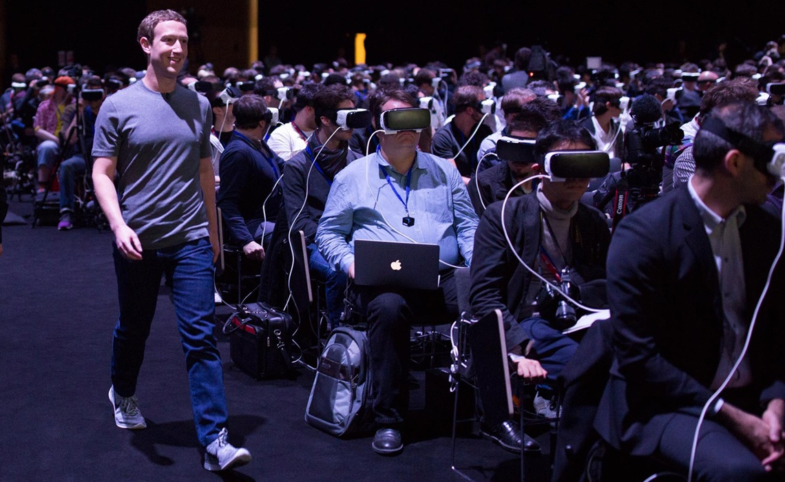

本篇是《Speculative Everything》一书第8章《Between Reality and the Impossible》的读书笔记。
当我们谈到现实（Reality）的时候，不自觉的将「可解释」当作区分现实与不现实的属性，也就是说现实一定是可解释的，无论这是一个真实发生的物理现象、还是一个意识上的「理所当然」。前者我们通过科学进行解释、后者我们通过艺术或哲学进行解释，一般意义上，这二者是泾渭分明的——科学的疆界止于艺术或哲学。
科学是普世的、艺术或哲学则不——但凡关于表达的东西都是瞬时（Instant）的、以及取决于观察角度的，于是通常我们认为前者为实、后者为虚；前者寻找本源的规律、后者通过视觉（艺术）或文字（哲学）表达和沟通某种意涵（Visual or literal icons for communicating an idea）。
从科学规律到艺术哲学，科学家、艺术家、哲学家们联手帮你处理着一个「可以解释」或「不可解释」的现实世界——你享受科学带来的确定性、通过艺术和哲学安抚现实世界的不确定性。二者讨论的依然是现实世界的合理性（或不合理性），讨论的对象同是现实世界。
而Speculative Design所期待的，既不是普世的规律、也非瞬时的意涵，换言之，对于某个话题、可能性、想象，建立一个可以介于短暂和恒久之间的讨论平台，通过交互的、体验的、使用的、和设计的方式启发大众对「超越现实（Beyond Reality）」的思考。
这便是Speculative Design的定位问题，即将讨论的目标放在现实之外的不可能性（the Impossible），并用一种介乎科学和艺术哲学之间的方式（权且称为设计）让大众开始讨论这些关于「如果（What if）」的话题。
难以忽略的是，且不论艺术哲学等一系列意识形态的表达，被冠以「无罪」和「普适性」的科学也在不经意间成为现实世界合理性的帮凶：据《纽约时报》美东时间9月12日报道，《美国医学会期刊：内科学》杂志当日发表了一篇披露制糖业内部文件的文章，揭露了美国制糖业上世纪60年代花钱收买科学家控制舆论，弱化糖制品与心血管疾病之间的关联，并转而将饱和脂肪酸推为罪魁祸首的丑闻。
而艺术与哲学并没有承担起「警惕现实合理性」的责任，反而成为「现实世界的安慰剂或放血疗法」：要么直接表现美好、要么通过短暂的痛苦刺激获得释放。
Speculative Design所期待的是用一种更接近理性方式（通过实在的交互以及被激发的个人思考）去讨论「如果（What if）」——例如科学对未来世界所带来的新合理性——如果基因技术可以帮助我们选择完美恋人、如果所有产品都是合成技术的产物。
2010年到2011年中，惠康基金会（Wellcome Trust）所资助的「如果（What if）」项目在伦敦惠康基金会总部展出，这个项目展示了多个介于可能与不可能间的设计，例如讨论「如果（What if）基因技术可以帮助我们选择完美恋人」的作品「证据娃娃（Evidence Doll）」：一款虚拟的产品帮助大众讨论诸如基因技术对于两性关系、社会、婚姻、情感的影响。

这里的现实，就是围绕在科学周围构造的世界，科技在不断强化这个世界的现实性，技术和哲学则从另一个角度解释，而设计和科技的结合也许是超越现实的一种方式，既不是通过利用人类对于「永恒的错误认识」，即客观规律、也不寻求意识形态的短暂刺激。简单说，在于用设计「玩弄（Manipulate）」科学，而反转设计作为科学副产品的形式。
这种「玩弄」，是传统艺术家们所不具备，他们只是换一种方式告诉你「不用担心什么一切都好的、不用担心未来」、或者「反正一切都会不好，不用担心现在」的道理、解释现实世界的道理。
这种「玩弄」，更是科学家们不具备的，他们孜孜以求地是去寻找解释世界的普世规则，用绝对对或者绝对错，去同意或反对现实世界，而忽略了真实世界中社会、文明、文化、人性的部分。
我们需要这种「玩弄」，因为关于科学和现实世界，人类从未停止疑问，扎克博格走过「缸中大脑（Brain in a vat）」的时候，这是否是我们所期待的人类现代社会？

卢梭在《论人类不平等的起源和基础》所言：
当我们被迫承认：这一卓越（自我完善）的、几乎无限的能力却是人类所有痛苦的来源；正是这一能力在时间的长流中将人类从原始状态中拖拽出来，使他不再过上安静、单纯的生活；正是这一能力在几个世纪中为人类孵化了所有的理智和错误、所有的罪恶和道德...将人类变成了统治自己与大自然的暴君」
「玩弄」的意义并非改变人类天然的矛盾统一，而是用一种警惕的、审慎的、自发的、谈论的方式冲破科技穹顶之下的现实世界，而非尝试解释或说服。
请不要误会我的意思，这并不是一个科技悲观主义的独白，只是希望用某种方式重新思考我们的真实世界（Try things out in our minds），一个被「无限能力」鞭笞的世界，而设计，可以在科学和艺术的交界处，用一种真实存在的方式完成对不可能的讨论，目的不是危言耸听，而是搭建一个超越真实世界的脚手架，警惕自己，身为暴君的我们。